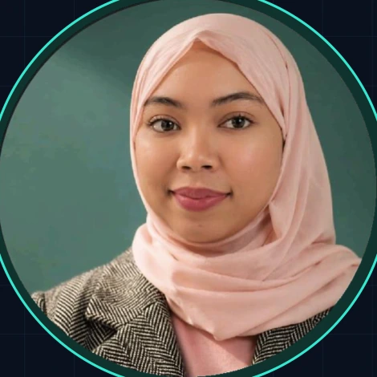
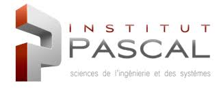
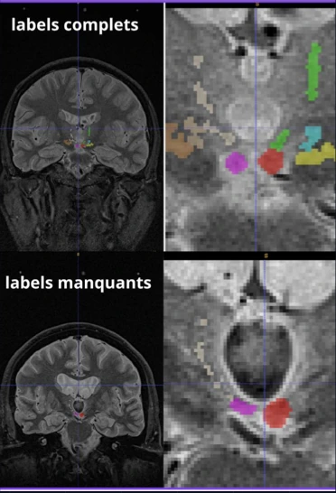
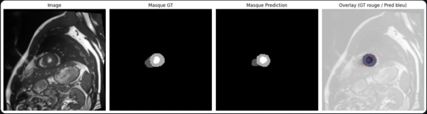
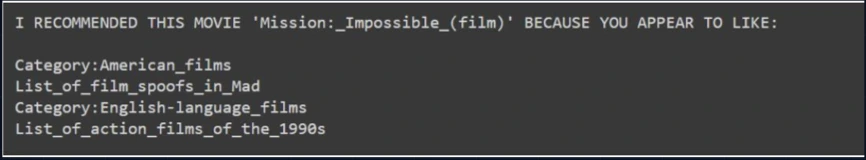
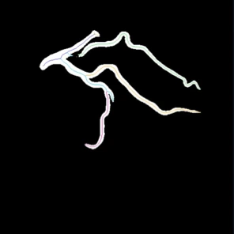
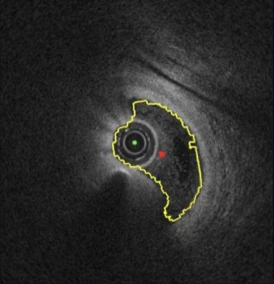
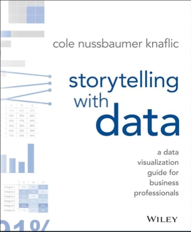
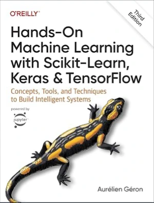
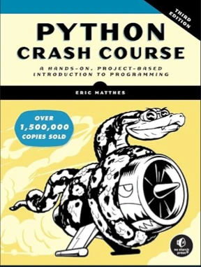

Programmation scientifique
Python, NumPy, SciPy, OpenCV, scikit-image et NetworkX. Deep learning avec PyTorch, MONAI, U-Net et nnU-Net.
Samah Maamri
Deep learning, imagerie médicale et segmentation.
Parcours

Université Kasdi Merbah Ouargla, Algérie
Université Kasdi Merbah Ouargla, Algérie
Parcours Imagerie et Technologie pour la Médecine · Université Clermont Auvergne
Stage de recherche · Avril–août 2026

Institut Pascal · Université Clermont Auvergne

Projets
Segmentation automatique d’IRM cardiaques et visualisation des résultats dans une interface Streamlit.
Dice de 0,819

Un système qui combine des graphes de connaissances et des réseaux convolutifs de graphes pour recommander des films et expliquer les suggestions.

Exploration du recalage en imagerie coronaire à partir de graphes vasculaires. Le travail porte sur la squelettisation, la détection de bifurcations et l’extraction de chemins vasculaires candidats.


Python, NumPy, SciPy, OpenCV, scikit-image et NetworkX. Deep learning avec PyTorch, MONAI, U-Net et nnU-Net.
IRM cérébrales et cardiaques, annotations incomplètes, segmentation multiclasse et pseudo-labels.
Prétraitement des images, validation des modèles et évaluation avec Dice, HD95 et VS.
DeepLearning.AI et Stanford Online · Coursera
DeepLearning.AI · Coursera
DeepLearning.AI · Coursera
NVIDIA Deep Learning Institute
Lectures

Cole Nussbaumer Knaflic

Aurélien Géron

Eric Matthes
Sujet de stage M2 · CHU de Reims / CReSTIC
Étudier le lien entre l’évolution de la forme d’un anévrisme et les caractéristiques du flux sanguin mesurées en IRM 4D Flow.
Après segmentation et recalage, la comparaison des surfaces indique où l’anévrisme a grandi. Les données IRM 4D Flow servent ensuite à rechercher des liens entre le flux sanguin et la croissance locale.
Objectif doctoral
Après le master, je souhaite poursuivre en doctorat en IA et Data Science pour travailler sur l’intelligence artificielle appliquée à l’imagerie médicale.